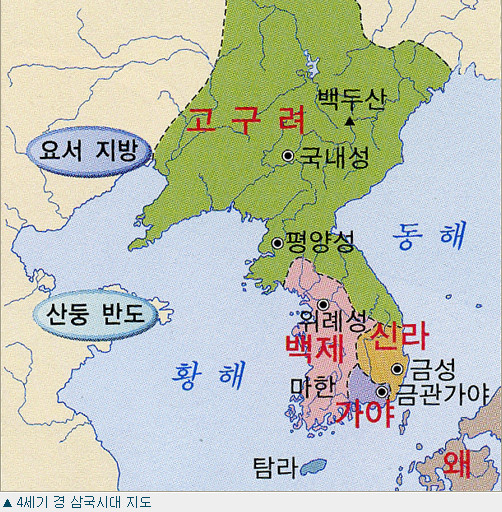

1대 혁거세(赫居世) (B.C.57) : 박, 거서간(居西干 혹은 거세간)
2대 남해(南解, A.D.5) : 박, 차차웅
3대 유리(儒理, A.D.24) : 박, 이사금
4대 탈해(脫解, A.D.57) : 석, 이사금, 토해(吐解).
5대 파사(婆娑, A.D.80) : 박, 이사금, 유리의 둘째 아들.
6대 지마(祇摩, A.D.112) : 박, 이사금, 기미(祇味).
7대 일성(逸聖, A.D.134) : 박, 이사금, 유리의 아들 혹은 일지(日知) 갈문왕의 아들
8대 아달라(阿達羅, A.D.154) : 박, 이사금
9대 벌휴(伐休, A.D.184) : 석, 이사금, 탈해의 2대손으로 아버지는 각간(角干) 구추(仇鄒)이다.
10대 내해(奈解, A.D.196) : 석, 이사금, 벌휴(伐休)의 손자.
11대 조분(助賁, A.D.230) : 석, 이사금, 제귀(諸貴). 벌휴의 2대손으로 아버지는 골정(骨正) 갈문왕이다.
12대 첨해(沾解, A.D.247) : 석, 이사금, 조분의 동생이다.
13대 미추(味鄒, A.D.262) : 김, 이사금, 미조. 김알지(金閼智)의 5대손 구도(仇道)의 아들.
14대 유례(儒禮, A.D.283) : 석, 이사금, 조분의 장자.
15대 기림(基臨, A.D.298) : 석, 이사금, 기립(基立). 조분의 2대손. 父는 이찬 걸숙(乞淑)
16대 흘해(訖解, A.D.310) : 석, 이사금, 내해의 2대손. 父는 각간 우로(于老)
17대 내물(奈勿, A.D.356) : 김, 이사금, 나밀(那密). 구도仇道)의 2대손. 父는 각간 말구(末仇).
18대 실성(實聖, A.D.402) : 김, 이사금, 김알지의 후손. 父는 대서지 이찬. 내물왕의 둘째 아들 복호는 고구려에, 셋째 아들 미사흔은 일본에 볼모로 보낸다.
19대 눌지(訥祗, A.D.417) : 김, 마립간, 내물왕의 장자. 실성왕을 죽이고 왕이 된다.
20대 눌지(訥祗, A.D.417) : 김, 마립간, 내물왕의 장자. 실성왕을 죽이고 왕이 된다.
21대 소지(炤知, A.D.479) : 김, 마립간, 비처(毗處).
22대 지증(智證, A.D.500) : 김, 마립간, 휘(諱)는 지대로(智大路). 내물 3대손 갈문왕 습보(習寶)의 아들.
23대 법흥(法興, A.D.514) : 김, 왕, 휘(諱)는 원종(原宗). 연호는 건원(建元)
24대 진흥(眞興, A.D.540) : 김, 왕, 휘(諱)는 삼맥종(삼麥宗) 혹은 심맥부(深麥夫) 법흥의 왕제 갈문왕 입종(立宗)의 아들. 연호는 개국(開國)
25대 진지(眞智, A.D.576) : 김, 왕, 휘(諱)는 사륜(舍輪). 진흥의 2자.
26대 진평(眞平, A.D.579) : 김, 왕, 휘(諱)는 백정(白淨). 진흥의 태자 동륜의 아들. 연호는 건복(建福)
27대 선덕(善德, A.D.632) : 김, 왕, 휘(諱)는 덕만(德曼). 진평의 장녀. 연호는 인평(仁平)
28대 진덕(眞德, A.D.647) : 김, 왕, 휘(諱)는 승만(勝曼). 진평의 모제 국반(國飯) 갈문왕의 딸. 연호는 태화(太和)
29대 태종무열(武烈, A.D.654) : 김, 왕, 휘(諱)는 춘추(春秋). 진지의 아들 이찬 용춘(龍春)의 아들
30대 문무(文武, A.D.661) : 김, 왕, 휘(諱)는 법민(法敏). 무열의 원자.
31대 신문(神文, A.D.681) : 김, 왕, 휘(諱)는 정명(政明) 혹은 명지(明之). 문무의 장자.
32대 효소(孝昭, A.D.692) : 김, 왕, 휘(諱)는 이홍(理洪). 신문의 태자.
33대 성덕(聖德, A.D.702) : 김, 왕, 휘(諱)는 흥광(興光). 신문의 둘째 아들로 효소의 동복 아우.
34대 효성(孝成, A.D.737) : 김, 왕, 휘(諱)는 승경(承慶). 성덕의 둘째 아들.
35대 경덕(景德, A.D.742) : 김, 왕, 휘(諱)는 헌영(憲英). 효성의 이복 동생.
36대 혜공(惠恭, A.D.765) : 김, 왕, 휘(諱)는 건운(乾運). 경덕의 적자
37대 선덕(善德, A.D.780) : 김, 왕, 휘(諱)는 양상(良相). 내물의 10대손으로 아버지는 사찬효방(孝芳).
38대 원성(元聖, A.D.785) : 김, 왕, 휘(諱)는 경신(敬信). 내물의 12대손.
39대 소성(昭聖, A.D.799) : 김, 왕, 휘(諱)는 준옹(俊邕). 원성의 태자 인겸(仁謙)의 아들.
40대 애장(哀莊, A.D.800) : 김, 왕, 휘(諱)는 청명(淸明). 소성의 태자.
41대 헌덕(憲德, A.D.809) : 김, 왕, 휘(諱)는 언승(彦昇). 소성의 동복아우.
42대 흥덕(興德, A.D.826) : 김, 왕, 휘(諱)는 수종(秀宗). 헌덕의 동복 아우.
43대 희강(僖康, A.D.836) : 김, 왕, 휘(諱)는 제륭(悌隆). 원성의 손자이고 이찬 헌정(憲貞)의 아들
44대 민애(閔哀, A.D.838) : 김, 왕, 휘(諱)는 명(明). 원성의 증손이며 대아찬 충공(忠恭)의 아들.
45대 신무(神武, A.D.839) : 김, 왕, 휘(諱)는 우징(祐徵). 원성의 손자이며 상대등 균정(均貞)의아들.
46대 문성(文聖, A.D.839) : 김, 왕, 휘(諱)는 경응(慶膺). 신무의 태자.
47대 헌안(憲安, A.D.857) : 김, 왕, 휘(諱)는 의정(誼靖). 신무의 이복 아우.
48대 경문(景文, A.D.861) : 김, 왕, 휘(諱)는 응렴(膺廉). 희강의 아들 아찬 계명(啓明)의 아들.
49대 헌강(憲康, A.D.875) : 김, 왕, 휘(諱)는 정(晸). 경문의 태자.
50대 정강(定康, A.D.886) : 김, 왕, 휘(諱)는 황(晃) 경문의 둘째 아들.
51대 진성(眞聖, A.D.887) : 김, 왕, 휘(諱)는 만(曼). 헌강의 여동생.
52대 효공(孝恭, A.D.897) : 김, 왕, 휘(諱)는 요(嶢). 헌강의 서자.
53대 신덕(神德, A.D.912) : 박, 왕, 휘(諱)는 경휘(景暉). 아달라왕(阿達羅王)의 후손.
54대 경명(景明, A.D.917) : 박, 왕, 휘(諱)는 승영(昇英). 신덕의 태자.
55대 경애(景哀, A.D.924) : 박, 왕, 휘(諱)는 위응(魏膺). 경명의 동복아우.
56대 경순(敬順, A.D.927) : 김, 왕, 휘(諱)는 부(傅). 문성의 후손으로 이찬 효종(孝宗)의 아들.